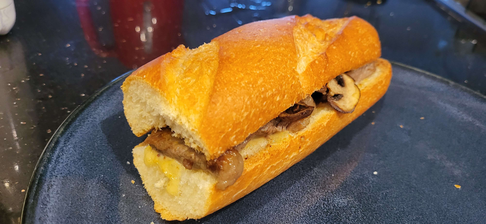

Grubby's Steak Sandwich

Another recipe based on an item from Frogsong, this time a steak sandwich from Grubby's diner! It's topped with a tasty sweet sauce and is super delicious. This version of the recipe uses beef instead of bug meat since giant slabs of bug meat typically are hard to find for humans.
Makes 2 sandwiches
Ingredients
Sandwich
- 1 pound of steak
- 1 cup of mushrooms
- 1 baguette (or any other french bread)
- Salt to taste
Sauce
- 1 tablespoon of whole grain dijon mustard
- ¼ cup of mayonnaise
- 1 tablespoon of honey
- 1 tablespoon of chopped green onions
- 1 teaspoon of onion powder
- ½ teaspoon cayenne pepper
How to make it
- Mix the sauce ingredients together into a bowl until smooth. Set aside.
- Cut the mushrooms into thin slices. Set these aside, too.
- Cut the steak into thin strips.
- Preheat a large oiled skillet. Add the steak to the skillet, and season it with salt.
- Fry the steak until fully cooked, then remove from the skillet, leaving the oil and steak juices.
- Add the mushrooms to the skillet, making sure they're spread out in a single layer.
- Cook the mushrooms until golden brown, and remove.
- Cut the bread lengthwise, and spread the sauce over each side evenly. Use as much or as little as you'd like!
- Layer the steak and mushrooms onto the bread, and broil for 2 to 3 minutes until toasted to desire.
- Enjoy!